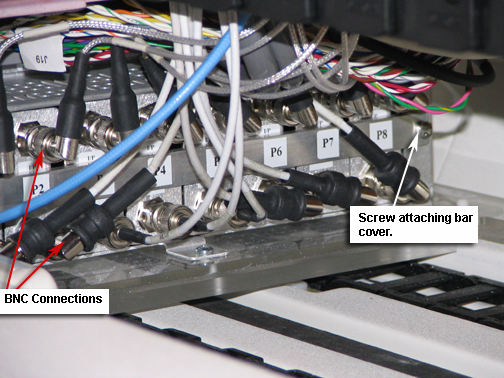

Operating Documentation
Direction 5440001-3, Rev# 6
Signa HDxt Service Methods
Module Version 1.0, Version Date 4/26/07
Operating Documentation |
| Required Persons | Preliminary Reqs | Procedure | Finalization |
|---|---|---|---|
| 1 | Not Applicable | 30 mins | 10 mins |
| Item | Qty | Effectivity | Part# | Manufacturer | |
|---|---|---|---|---|---|
| Standard Non Magnetic Screw Driver | 1 | - | - | - | |
| ||||
| Strong Magnetic Field! | ||||
| Ferrous materials can become dangerous projectiles in the presence of the magnetic field Produced by the Signa Magnet. | ||||
| Do not Bring any ferromagnetic tools or equipment into the magnet room. |
Open up the LPCA by removing the 4 screws securing cover to the carriage. (see Illustration 1).
Illustration 1: Open LPCA

Remove the BNC cable connections from the preamps. An older LPCA will have only one cable connection per preamp, while a forward production LPCA will have two BNC connections per preamp. (See Illustration 2 for an older LPCA and Illustration 3 for a Forward Production system.)
Illustration 2: Multicoil Preamp

Illustration 3: Multicoil Interface Assembly in a Forward Production System

Remove the screw that attaches the back plate or bar on top of the preamp.
The preamp can now be removed by hand. Replace the defective preamp(s) and reverse the steps take to remove the old amp.
Reassemble anything taken apart.
Setup for a scan using multicoil to test that the system is working normally.